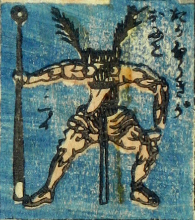

竹箒；タケボウキ

仁王立ちの竹箒の鬼。逆さに立てた竹箒の箒部分に顔があり、大きな目玉が2つついている。体は人間のもので、右腕に金棒をつかんでいる。腰巻を巻いている。
著作者：芳盛／出典：親書誌：U426_nichibunken_0073：しん板化物尽し；シンパンバケモノヅクシ／日付：2006／資源識別子：U426_nichibunken_0073_0012_0000
Copyright (c)2010- International Research Center for Japanese Studies, Kyoto, Japan. All rights reserved.